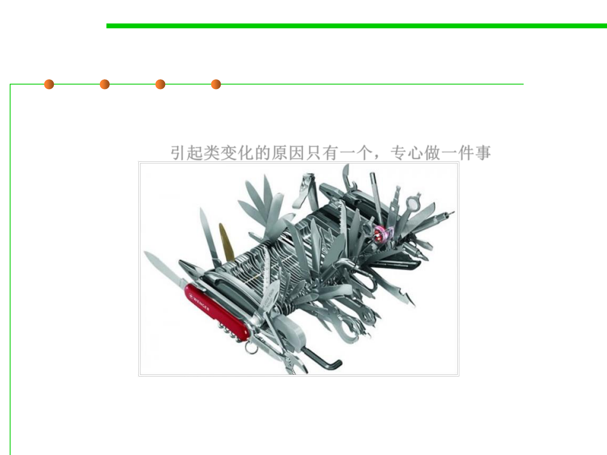

6.1 Metrics and Construction Principles for Maintainability
Single Responsibility Principle
▪ “There should never be more than one reason for a class to
change”, i.e., a class should concentrate on doing one thing and
one thing only. 引起类变化的原因只有一个，专心做一件事
Just because you can, doesn’t mean you should